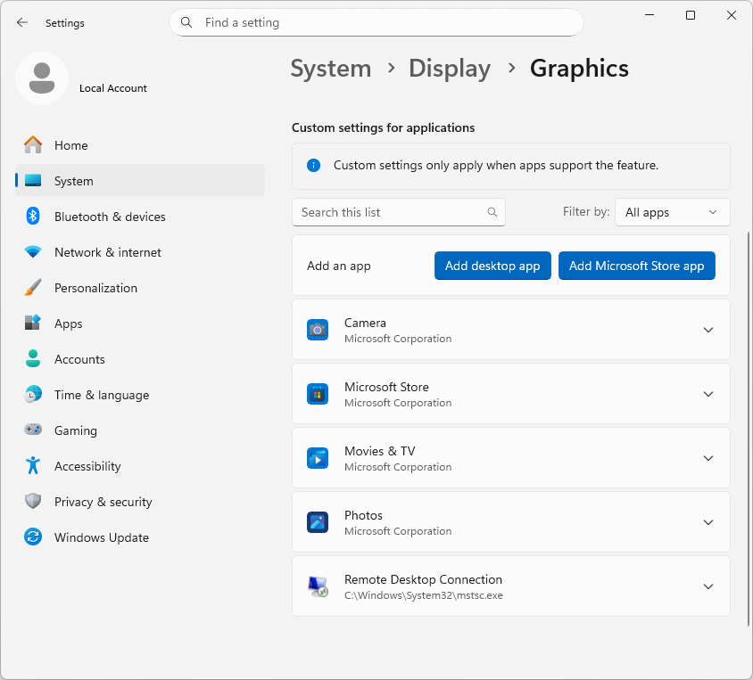
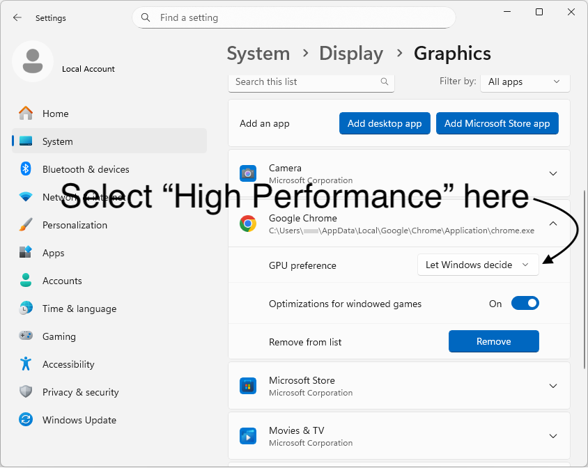

Set Chrome to use the high-performance graphics chip
1
Open Graphics settings
Open settings by clicking here, or go to Settings → System → Display → Graphics.
In the list, look for Google Chrome (you may need to scroll). If you see it, go to Step 3.
2
Add Chrome to the list (only if it's missing)
If you don't see Chrome there:
- Click Add desktop app.
- At the bottom, in the File name box, paste one of the lines below.
- Press Enter or click Add.
If the first line shows you an error, try the next one.
%LocalAppData%\Google\Chrome\Application\chrome.exe
C:\Program Files (x86)\Google\Chrome\Application\chrome.exe
C:\Program Files\Google\Chrome\Application\chrome.exe

3
Choose High Performance for Chrome
Find Google Chrome in the list (you may need to scroll). Click it and set GPU preference to High Performance.
4
Restart the browser — and if needed, your computer
Close Chrome and open it again. If it doesn't help, try restarting your computer.
If you don't see a difference
- Laptop on battery? Some laptops still prefer the power-saving graphics chip on battery. Try plugging in.
- Update graphics drivers via your graphics chip maker's app (NVIDIA / AMD / Intel) or Windows Update.
- Reset: In Graphics settings, set Chrome back to Let Windows decide, then repeat the steps.